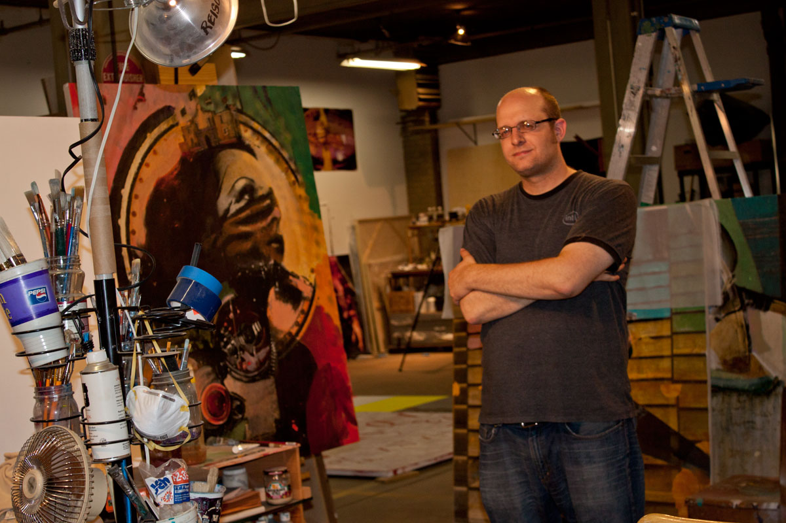

Jon Reischl is a visual artist in St. Paul, MN. He has shown his paintings at various venues around the region, including solo exhibitions at The Phipps Center for the Arts (Hudson, WI), the Ames Center (Burnsville, MN), and Nicademus Arts (St. Paul, MN). He lives in St. Paul, Minnesota with his lovely wife Debra and their trusty beagle. A graduate of the College of Visual Arts, Jon Reischl shares a studio with fellow CVA alumni Jeremy Szopinski and Ed Charbonneau
If you have questions, comments, or would like to set up a studio visit, please send me an Email. If you'd like to be notified of upcoming exhibitions and other news, subscribe to the mailing list.
Connect with Jon Reischl via social media:


I am interested in the delusion of memory and its arbitrary relationship with present awareness.
I digitally composite monochromatic, photographic images, project the collage onto a physical substrate and render it in paint. Throughout this reductive/regenerative process, the original images lose distinction and are reinterpreted to befit their present circumstances, with little regard for the particulars of their origin.